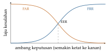

Bab 20
Komputasi yang Menghilang
Pada musim dingin 2025/26 saya mengikuti dua kuliah pervasive computing dari Alois Ferscha. Yang satu membahas sistem dan lingkungan: visi komputasi pervasif, sensor dan modalitas, jaringan sensor, cara mengenali manusia dan benda, arsitektur pengenalan konteks, dan komputer yang dikenakan di kepala. Yang lain membahas perancangan dari sisi manusia: persepsi, penglihatan dan gerak mata, pendengaran, perabaan, atensi, emosi, antarmuka yang bisa disentuh, dan gerakan motorik. Latihannya meminta kami mengumpulkan data sensor sendiri dengan ponsel, lalu membangun pengenal aktivitas, analisis adegan akustik, dan sistem pelacak gerak.
Bab ini membahas komputer yang tidak lagi duduk di meja, melainkan tersebar di sekitar dan di tubuh kita. Ada dua sisi yang harus dipahami bersamaan: sisi mesin, yaitu sensor dan cara menyimpulkan konteks dari sinyalnya, dan sisi manusia, yaitu bagaimana kita merasakan, memperhatikan, dan bergerak. Sistem pervasif yang baik menghormati keduanya.
Visi Weiser
Weiser (1991) membuka artikelnya dengan kalimat yang sering dikutip: teknologi yang paling mendalam adalah teknologi yang menghilang, yang menenun dirinya ke dalam kehidupan sehari-hari sampai tidak bisa dibedakan darinya. Menulis adalah contohnya. Kita tidak lagi memikirkan teknologi tulisan ketika membaca papan nama jalan. Weiser membayangkan komputer yang sama: tersebar di dinding, di meja, di pakaian, bekerja tanpa diminta, dan tidak menuntut perhatian. Kuliah menggambarkan sejarah komputasi sebagai gelombang: satu komputer besar untuk banyak orang, lalu satu komputer pribadi untuk setiap orang, lalu banyak komputer untuk setiap orang. Hari ini ponsel, jam pintar, dan rumah pintar mendekati visi itu, dengan semua manfaat dan masalahnya.
Komputasi pervasif membutuhkan tiga kemampuan: merasakan dunia lewat sensor, memahami konteksnya, dan bertindak dengan cara yang tidak mengganggu. Bagian tengah, memahami konteks, adalah tempat machine learning bekerja.
Sensor dan modalitas
Ponsel biasa membawa akselerometer, giroskop, magnetometer, mikrofon, kamera, GPS, dan sensor cahaya serta jarak. Akselerometer MEMS adalah massa kecil yang digantung pegas di dalam chip. Ketika chip dipercepat, massa itu tertinggal sedikit, dan perpindahannya diukur secara kapasitif. Karena massa itu juga ditarik gravitasi, akselerometer yang diam di meja membaca sekitar \(9{,}81\ \mathrm{m/s^2}\) ke atas, bukan nol. Sifat ini menjengkelkan untuk mengukur gerak, tetapi berguna untuk mengukur kemiringan. Giroskop MEMS memanfaatkan gaya Coriolis pada massa yang bergetar untuk mengukur kecepatan sudut. Magnetometer mengukur medan magnet bumi dan memberi arah utara, kecuali di dekat benda logam yang mengganggunya.
Kuliah menekankan satu hal: tidak ada sensor yang langsung mengukur konteks. Tidak ada “sensor rapat” atau “sensor sedang memasak”. Konteks harus disimpulkan dari kombinasi sinyal mentah. Setiap modalitas punya kelebihan dan kekurangannya. Kamera kaya informasi tetapi mengganggu privasi dan boros energi. Akselerometer murah dan hemat, tetapi sinyalnya sulit ditafsirkan. Mikrofon menangkap suasana dengan baik, tetapi juga merekam percakapan.
Jaringan sensor menambahkan masalah komunikasi dan energi. Simpul-simpul kecil bertenaga baterai harus memutuskan kapan mengukur, kapan mengirim, dan kapan tidur. Mengirim data lewat radio umumnya jauh lebih mahal daripada mengolahnya di tempat, sehingga ringkasan lokal dan tidur yang terjadwal (duty cycling) menjadi strategi utama untuk membuat baterai bertahan berbulan-bulan.
Jaringan sensor nirkabel
Satu sensor jarang cukup. Jaringan sensor nirkabel terdiri atas banyak simpul kecil yang otonom, mote, masing-masing dengan sensor, prosesor sederhana, radio, dan baterai, yang bersama-sama memantau sesuatu yang luas: iklim mikro di bawah dan di atas tanah, sarang burung, getaran jembatan, atau kualitas udara kota. Visi smart dust dari akhir 1990-an membayangkan simpul seukuran butir debu. Kuliah memperlihatkan contoh pemantauan habitat, di mana jaringan seperti ini punya kelebihan yang jelas: titik ukur yang banyak mengurangi galat interpolasi, simpul yang kecil tidak mengganggu perilaku hewan yang diamati, dan sistem bisa berjalan berbulan-bulan tanpa ditunggui.
Batasan utamanya adalah energi. Mengirim satu bit lewat radio biasanya jauh lebih mahal daripada memproses ribuan instruksi, sehingga data diolah dan diringkas di simpul sebelum dikirim, radio dinyalakan sesingkat mungkin dengan duty cycling, dan data diteruskan dari simpul ke simpul dengan beberapa lompatan pendek alih-alih satu lompatan jauh, karena energi pancaran tumbuh lebih cepat dari linear terhadap jarak. Jaringan juga harus mengatur dirinya sendiri dan tetap bekerja ketika sebagian simpul mati.
Masalah yang tampak sepele tetapi menentukan adalah waktu. Jam di setiap simpul berjalan sedikit berbeda. Kristal dengan drift 50 bagian per juta meleset sekitar \(50\times10^{-6}\times86\,400\approx4{,}3\) detik per hari. Untuk melokalisasi sumber suara dari selisih waktu tiba di beberapa simpul, atau untuk beamforming seperti di Bab 18, galat seperti itu fatal. Protokol berbasis waktu bolak-balik seperti NTP memakai empat cap waktu: simpul A mengirim pada \(T_1\) menurut jamnya, B menerima pada \(T_2\) dan membalas pada \(T_3\) menurut jamnya, dan A menerima balasan pada \(T_4\). Dengan asumsi waktu tempuh kedua arah sama, selisih jam dan waktu tempuh bolak-balik adalah \[\theta=\frac{(T_2-T_1)+(T_3-T_4)}2,\qquad \delta=(T_4-T_1)-(T_3-T_2).\] Misalkan jam B dua milidetik di depan jam A, setiap arah butuh dua milidetik, dan B membalas satu milidetik setelah menerima. A mengirim pada \(T_1=100\). Pesan tiba ketika jam A menunjukkan 102, yaitu \(T_2=104\) menurut jam B. B membalas pada \(T_3=105\), dan balasan tiba dua milidetik kemudian, ketika jam B menunjukkan 107, yaitu \(T_4=105\) menurut jam A. Rumus di atas memberi \(\theta=(4+0)/2=2\) dan \(\delta=5-1=4\), tepat seperti seharusnya. Rumus itu bergantung pada asumsi bahwa kedua arah sama cepat. Kalau pesan berangkat butuh tiga milidetik dan balasan hanya satu, \(\delta\) tetap empat, tetapi taksiran \(\theta\) meleset sebesar separuh selisihnya, satu milidetik, dan tidak ada cara untuk mendeteksinya dari keempat cap waktu saja. Reference broadcast synchronization menghindarinya dengan cara cerdik. Satu simpul menyiarkan sinyal acuan, dan simpul-simpul penerima tidak menyinkronkan diri dengan pengirim, melainkan saling membandingkan kapan masing-masing menerima sinyal yang sama. Ketidakpastian di sisi pengirim, yang biasanya paling besar, hilang dari perhitungan.
Mengenali manusia
Sistem biometrik mengenali orang dari ciri tubuh atau perilaku: sidik jari, wajah, iris, suara, atau cara berjalan. Semuanya bekerja dengan cara yang sama. Sampel baru dibandingkan dengan templat yang tersimpan, menghasilkan skor kemiripan, dan skor itu dibandingkan dengan ambang. Dua jenis kesalahan muncul. False acceptance rate (FAR) adalah fraksi percobaan orang lain yang keliru diterima. False rejection rate (FRR) adalah fraksi percobaan pemilik sah yang keliru ditolak. Kalau dari 1000 percobaan orang lain ada 10 yang diterima, FAR-nya 1 persen.
Kedua kesalahan bergerak berlawanan arah ketika ambang digeser (Gambar 20.1). Ambang yang ketat membuat penyusup sulit masuk tetapi juga sering menolak pemiliknya, ambang yang longgar sebaliknya. Titik tempat kedua kurva berpotongan disebut equal error rate, satu angka yang sering dipakai untuk membandingkan sistem. Dalam praktik, ambang dipilih menurut kebutuhan: pintu ruang server memilih FAR kecil sekali walau sesekali menyebalkan pemiliknya, sedangkan pembuka layar ponsel memilih FRR kecil karena kenyamanan lebih penting.

Mengenali benda dan tempat
Benda bisa dikenali dengan kode batang atau kode QR yang dibaca kamera, atau dengan label RFID yang dibaca tanpa kontak dan tanpa garis pandang. Label RFID pasif tidak punya baterai. Ia menerima energi dari medan pembaca dan menjawab dengan memantulkan sebagian sinyal itu dalam pola tertentu. NFC adalah RFID frekuensi tinggi dengan jangkauan beberapa sentimeter, dipakai untuk pembayaran nirsentuh, karena jarak yang pendek justru menjadi fitur keamanan.
Untuk mengetahui posisi di dalam gedung, di mana GPS tidak sampai, kuliah membahas beacon Bluetooth Low Energy. Beacon memancarkan sinyal secara berkala, dan ponsel mengukur kekuatan sinyal yang diterima (RSSI). Kekuatan sinyal melemah dengan jarak menurut model rugi lintasan logaritmik, \[\mathrm{RSSI}(d)=\mathrm{RSSI}_{1\,\mathrm m}-10\,n\log_{10}\frac{d}{1\,\mathrm m},\] dengan \(n\) eksponen rugi lintasan, sekitar dua di ruang bebas dan lebih besar di dalam gedung. Membalik persamaan ini memberi perkiraan jarak, \(d=10^{(\mathrm{RSSI}_{1\,\mathrm m}-\mathrm{RSSI})/(10n)}\). Kalau sebuah beacon terbaca \(-59\) dBm pada satu meter dan ponsel membaca \(-75\) dBm dengan \(n=2\), jaraknya sekitar \(10^{0{,}8}\approx6{,}3\) m. Dalam praktik, tubuh manusia, dinding, dan pantulan membuat RSSI berfluktuasi beberapa desibel, yang berarti galat jarak puluhan persen. Karena itu posisi biasanya diperkirakan dari beberapa beacon sekaligus dan dihaluskan dengan filter, atau dicocokkan dengan peta sidik jari RSSI yang direkam sebelumnya, sebuah masalah regresi yang cocok untuk machine learning.
Rantai pengenalan konteks
Arsitektur pengenalan yang dibahas kuliah mengikuti rantai yang juga dijelaskan dalam tutorial Bulling, Blanke, dan Schiele (2014) (Gambar 20.2). Data mentah dari sensor dipotong menjadi jendela-jendela waktu yang tumpang tindih, misalnya dua detik dengan geseran satu detik. Pada frekuensi sampling 50 Hz, setiap jendela berisi seratus sampel per sumbu. Dari setiap jendela dihitung fitur. Fitur domain waktu meliputi rata-rata, simpangan baku, nilai minimum dan maksimum, rentang antarkuartil, kemiringan dan keruncingan distribusi, laju perpotongan nol, dan korelasi antar sumbu. Fitur domain frekuensi dihitung dari FFT: frekuensi dominan, energi di pita tertentu, dan entropi spektral, yang mengukur seberapa merata energi tersebar di semua frekuensi. Fitur-fitur itu dimasukkan ke pengklasifikasi, misalnya \(k\)-nearest neighbour, pohon keputusan, SVM, atau jaringan saraf, yang menghasilkan label aktivitas untuk setiap jendela. Langkah terakhir menghaluskan urutan label, karena seseorang tidak berganti dari berjalan ke duduk lalu ke berjalan lagi dalam tiga detik.
Ketika ada beberapa sensor, informasinya bisa digabung di tiga tingkat. Fusi tingkat data menggabungkan sinyal mentah, misalnya rata-rata dua akselerometer. Fusi tingkat fitur menggabungkan vektor fitur dari semua sensor sebelum klasifikasi. Fusi tingkat keputusan menjalankan pengklasifikasi terpisah untuk setiap sensor lalu menggabungkan keputusannya, misalnya dengan pemungutan suara. Semakin awal fusi dilakukan, semakin banyak informasi yang tersedia, tetapi semakin rapuh sistemnya kalau satu sensor rusak.
Rantai ini terlihat sederhana, tetapi kuliah dan latihan memperlihatkan jebakannya. Yang paling penting adalah cara evaluasi. Kalau jendela-jendela dari orang yang sama masuk ke data latih dan data uji sekaligus, model belajar mengenali gaya gerak orang itu, bukan aktivitasnya, dan skornya tampak terlalu bagus. Evaluasi yang jujur meninggalkan satu orang di luar pelatihan lalu mengujinya pada orang itu, sebuah variasi dari pembagian data yang hati-hati di Bab 1. Dalam latihan kami, yang dikenali adalah cara menggenggam dan gerakan memasang sekrup, direkam dengan akselerometer ponsel. Setiap jendela diringkas menjadi sekitar empat puluh fitur, dari rata-rata, simpangan baku, kemiringan distribusi, dan laju perpotongan nol di setiap sumbu, sampai korelasi antar sumbu, frekuensi dominan, dan entropi spektral.
Evaluasi pengenalan aktivitas punya jebakan khasnya sendiri. Jendela-jendela yang berdekatan dari rekaman yang sama hampir identik, apalagi kalau jendelanya tumpang tindih separuh seperti yang lazim dipakai. Membagi jendela secara acak ke data latih dan data uji membuat model diuji pada potongan yang hampir sama dengan yang ia pelajari, dan akurasinya tampak jauh lebih tinggi dari kenyataan. Yang jujur adalah validasi leave-one-subject-out: latih pada semua orang kecuali satu, uji pada orang yang tersisa, lalu ulangi untuk setiap orang. Cara ini menjawab pertanyaan yang sebenarnya ingin kita ketahui, yaitu seberapa baik sistem bekerja untuk orang baru, dan biasanya memberi angka yang jauh lebih rendah. Hasilnya sebaiknya dilaporkan sebagai matriks konfusi per kelas, bukan hanya akurasi total, karena aktivitas yang jarang, seperti jatuh, justru yang paling penting dan paling mudah tenggelam dalam rata-rata.
Prediksi per jendela juga bisa dihaluskan. Aktivitas manusia punya durasi: orang tidak beralih dari berjalan ke duduk ke berlari setiap dua detik. Hidden Markov model dari Bab 14, dengan aktivitas sebagai keadaan tersembunyi dan keluaran pengklasifikasi sebagai pengamatan, menghukum pergantian yang terlalu sering. Algoritme Viterbi lalu memilih urutan aktivitas yang paling masuk akal secara keseluruhan, dan kesalahan sesaat yang terisolasi hilang dengan sendirinya.
Melacak gerak
Sensor inersia memberi kecepatan sudut dari giroskop dan percepatan dari akselerometer. Mengintegrasikan kecepatan sudut memberi orientasi, tetapi setiap bias kecil ikut terintegrasi dan orientasi perlahan melenceng. Akselerometer, saat sensor diam atau bergerak pelan, mengukur arah gravitasi dan memberi kemiringan yang tidak melenceng, misalnya \(\theta^{\mathrm{acc}}=\operatorname{atan2}(a_y,a_z)\) untuk sudut terhadap satu sumbu, tetapi berisik. Kedua sumber ini saling melengkapi, dan filter komplementer menggabungkannya: \[\theta_k=\alpha\big(\theta_{k-1}+\omega_k\Delta t\big)+(1-\alpha)\,\theta^{\mathrm{acc}}_k.\] Nama “komplementer” punya arti tepat. Bagian giroskop diproses oleh filter lolos tinggi dan bagian akselerometer oleh filter lolos rendah dengan frekuensi potong yang sama, sehingga kedua filter berjumlah satu di semua frekuensi. Konstanta waktu peralihannya kira-kira \(\tau=\alpha\Delta t/(1-\alpha)\). Dengan \(\Delta t=0{,}01\) detik dan \(\alpha=0{,}98\), \(\tau\approx0{,}5\) detik: perubahan yang lebih cepat dari setengah detik dipercayakan pada giroskop, yang lebih lambat pada akselerometer. Ini versi buatan tangan dari Kalman filter di Bab 14, dengan gain yang dipilih sendiri alih-alih dihitung dari kovarians.
Melacak posisi jauh lebih sulit. Percepatan harus diintegrasikan dua kali, sehingga bias percepatan \(b\) yang konstan menghasilkan galat posisi \(\tfrac12bt^2\). Bias sekecil \(0{,}01\ \mathrm{m/s^2}\), seperseribu gravitasi, sudah membuat galat 18 meter setelah satu menit. Karena itu pelacak posisi inersia murni hanya berguna untuk waktu singkat, kecuali ada koreksi dari luar, seperti langkah kaki yang terdeteksi, kamera, atau beacon.
Manusia di dalam lingkaran: persepsi
Separuh kedua materi membahas sisi manusia, karena sistem pervasif berinteraksi langsung dengan persepsi dan perhatian kita. Psikofisika mengukur hubungan antara rangsangan fisik dan pengalaman. Hukum Weber menyatakan bahwa perbedaan terkecil yang bisa dirasakan sebanding dengan besarnya rangsangan, \(\Delta I/I=k\). Kalau kita baru bisa membedakan perubahan berat dua persen, maka pada beban seratus gram perbedaan dua gram terasa, sedangkan pada satu kilogram butuh dua puluh gram. Fechner mengintegrasikan hukum ini menjadi hubungan logaritmik antara kekuatan rangsangan dan kekuatan sensasi, \(S=k\ln(I/I_0)\), yang menjelaskan mengapa telinga dan mata kita bekerja nyaman dalam skala desibel.
Mata hanya melihat tajam di daerah kecil di tengah penglihatan, fovea, selebar sekitar dua derajat. Untuk melihat sebuah adegan, mata melompat-lompat dalam gerakan cepat yang disebut sakade, lalu berhenti sejenak dalam fiksasi yang biasanya berlangsung beberapa ratus milidetik. Pelacak mata modern menyinari mata dengan inframerah dan mengikuti posisi pusat pupil relatif terhadap pantulan cahaya di kornea. Dari deret posisi pandang, fiksasi dan sakade dipisahkan, misalnya dengan ambang kecepatan sudut: sampel dengan kecepatan di atas sekitar tiga puluh derajat per detik dianggap bagian dari sakade. Pola fiksasi mengungkap apa yang menarik perhatian, seberapa berat beban pikiran, atau apakah seseorang mengantuk.
Memakai pandangan mata sebagai input punya masalah klasik yang disebut masalah sentuhan Midas: mata kita melihat banyak hal tanpa bermaksud memilihnya, sehingga sistem harus bisa membedakan melihat dari memilih. Solusi yang umum adalah waktu diam (dwell time), memilih sesuatu hanya kalau dipandang cukup lama, atau menggabungkan pandangan dengan konfirmasi dari modalitas lain.
Telinga kita mendengar dari sekitar 20 Hz sampai 20 kHz dan menentukan arah suara terutama dari dua isyarat: perbedaan waktu tiba antara kedua telinga dan perbedaan kerasnya. Perbedaan waktu terbesar terjadi untuk suara dari samping, kira-kira lebar kepala dibagi kecepatan suara, sekitar \(0{,}2/343\approx0{,}6\) milidetik. Otak kita memakai perbedaan sekecil itu untuk menentukan arah, sebuah prestasi pemrosesan sinyal yang mengesankan. Perabaan dilayani reseptor yang peka terhadap tekanan, getaran, dan regangan, dan antarmuka vibrotaktil memanfaatkannya untuk menyampaikan informasi tanpa mengganggu mata dan telinga.
Atensi dan gerak
Perhatian manusia terbatas. Teori sumber daya ganda dari Wickens, yang dibahas di kuliah, menyatakan bahwa dua tugas saling mengganggu lebih sedikit kalau memakai sumber daya yang berbeda: modalitas yang berbeda, misalnya mata dan telinga, kode yang berbeda, spasial atau verbal, dan tahap pemrosesan yang berbeda. Itulah sebabnya navigasi dengan suara lebih aman saat mengemudi daripada navigasi yang harus dibaca, dan mengapa notifikasi yang datang di saat yang salah begitu merusak konsentrasi.
Dua hukum empiris yang terkenal menggambarkan kecepatan kita bereaksi dan bergerak. Hukum Hick–Hyman menyatakan bahwa waktu memilih di antara \(n\) pilihan yang sama mungkin tumbuh secara logaritmik, \(RT=a+b\log_2(n+1)\), karena memilih adalah memangkas ketidakpastian. Hukum Fitts menyatakan bahwa waktu untuk menunjuk sebuah target berjarak \(D\) dan selebar \(W\) adalah \[MT=a+b\log_2\Big(\frac DW+1\Big).\] Suku logaritma disebut indeks kesulitan, dalam satuan bit. Menunjuk tombol selebar 2 cm yang berjarak 14 cm punya indeks kesulitan \(\log_28=3\) bit. Menggandakan jarak sambil menggandakan lebar tidak mengubah kesulitannya. Dari sini lahir prinsip desain yang kita kenal: tombol penting dibuat besar dan dekat, dan sudut-sudut layar adalah target yang paling mudah karena kursor tidak bisa melewatinya, seolah lebarnya tak hingga.
Emosi dan antarmuka yang bisa disentuh
Komputasi afektif mencoba mengenali dan menanggapi emosi. Model emosi yang dipakai beragam, dari beberapa kategori emosi dasar seperti senang, sedih, marah, takut, terkejut, dan jijik, sampai ruang dua dimensi valensi dan gairah, di mana setiap emosi adalah sebuah titik: senang berada di valensi positif dan gairah sedang, marah di valensi negatif dan gairah tinggi. Sinyalnya bisa berupa wajah, suara, postur, atau sinyal fisiologis seperti detak jantung dan konduktansi kulit. Kuliah mengingatkan bahwa emosi yang diungkapkan tidak selalu sama dengan yang dirasakan, bahwa ekspresi berbeda antar budaya, dan bahwa pengenalan emosi menyentuh wilayah privasi yang pribadi. AI Act Uni Eropa bahkan melarang pengenalan emosi di tempat kerja dan sekolah (Bab 35).
Antarmuka yang bisa disentuh, atau tangible user interface, memberi bentuk fisik pada informasi digital, sehingga kita bisa memegang, memindah, dan menyusun benda nyata untuk mengendalikan komputer. Kuliah juga melihat ke depan, ke materi yang bisa diprogram dan mengubah bentuknya sendiri, ketika batas antara benda dan antarmuka menghilang sepenuhnya.
Di mana machine learning masuk
Hampir seluruh rantai pengenalan konteks kini bisa diganti jaringan saraf yang belajar fiturnya sendiri dari sinyal mentah, seperti jaringan konvolusi satu dimensi atau LSTM pada data akselerometer (Bab 9). Analisis adegan akustik, yang juga menjadi salah satu latihan kami, mengenali tempat dan kejadian dari suara: sinyal diubah menjadi spektrogram, lalu dikenali seperti gambar oleh jaringan visi. Pelacak mata memakai jaringan konvolusi untuk menemukan pupil dalam gambar yang buruk, dan pengenalan emosi memakai model multimodal.
Tantangan khas bidang ini tetap ada. Data berlabel mahal karena harus direkam dengan orang sungguhan. Setiap orang bergerak berbeda, dan sensor bergeser posisinya di tubuh. Perangkatnya punya baterai dan memori kecil, sehingga model kecil yang bisa berjalan di mikrokontroler, sering disebut TinyML, menjadi cabang tersendiri. Dan karena sensornya melekat di tubuh dan di rumah, pertanyaan privasi dan persetujuan tidak bisa dipisahkan dari pertanyaan teknis (Bab 35).
Perkembangan riset
Pengenalan aktivitas dari sensor yang dikenakan lama terhambat oleh data berlabel yang sedikit dan beragam: setiap studi punya perangkat, posisi pemakaian, dan kelompok orang yang berbeda. Yuan dkk. (2024) memakai data akselerometer pergelangan tangan dari UK Biobank, sekitar 700 ribu hari-orang tanpa label, untuk pretraining self-supervised. Tugas buatannya mengenali transformasi yang diterapkan pada sinyal, misalnya apakah sinyal dibalik dalam waktu atau dipermutasi. Model yang dihasilkan, setelah disetel pada delapan dataset berlabel, mengungguli pembanding dengan median kenaikan skor F1 sekitar 24 persen, dan yang lebih penting, generalisasi ke dataset, kelompok, lingkungan, dan perangkat lain. Itulah pola model fondasi dari Bab 6 dan Bab 38, diterapkan pada rantai pengenalan konteks yang dibahas di bab ini.
Catatan sumber.
Bab ini mengikuti kuliah Pervasive Computing: Systems and Environments (visi, sensor dan modalitas, jaringan sensor, identifikasi manusia dan benda, arsitektur pengenalan, komputasi yang dikenakan di kepala) dan Pervasive Computing: Design and Development (persepsi, penglihatan dan pelacakan mata, pendengaran, perabaan, atensi, komputasi afektif, antarmuka tangible, gerak motorik), beserta latihan pengenalan aktivitas, analisis adegan akustik, dan pelacakan gerak.